哈啰！我是李睿，一个有多元文化求学与工作经历的UX/UI设计师 🗺️
目前在TikTok从事UX/UI设计工作。
我习惯了总问为什么，与其直接跳去解决问题，我更想了解问题是否存在，以及其存在背后的根源问题是什么。
我相信设计在科技中的力量，是在人类和编程机器之间搭建一座沟通的桥梁。而作为一名用户体验设计师，我期望去挖掘出用户所为，所思，和所需。我认为，只有认清了用户的心智模型，才能设计出更符合用户预期甚至超出期望的界面。
请保持联系～我非常愿意与你交流关于我的作品，我的经历，以及我的设计思考。
⏬ 个人简历

👇 点击可与下面的手机原型交互，可以从中了解一点点我的经历～
2020.02.02
南意之旅
这是至目前为止，我最喜欢的意大利海岸线小镇。人不多，却该有的皆有。镇上最吸引我的是家的方向永远是朝着海。因此，不用任何导航，也不会迷路...

2019.07.29
多瑙河上的城市
初次来到中欧城市，彷佛只有这里的气候在不断提醒我，现在是微风和煦的夏日。这样的气候就像是当时看到的多瑙河一样，让人凉爽舒心。此次旅行是一个人，少了些许欢乐与趣味，也因...
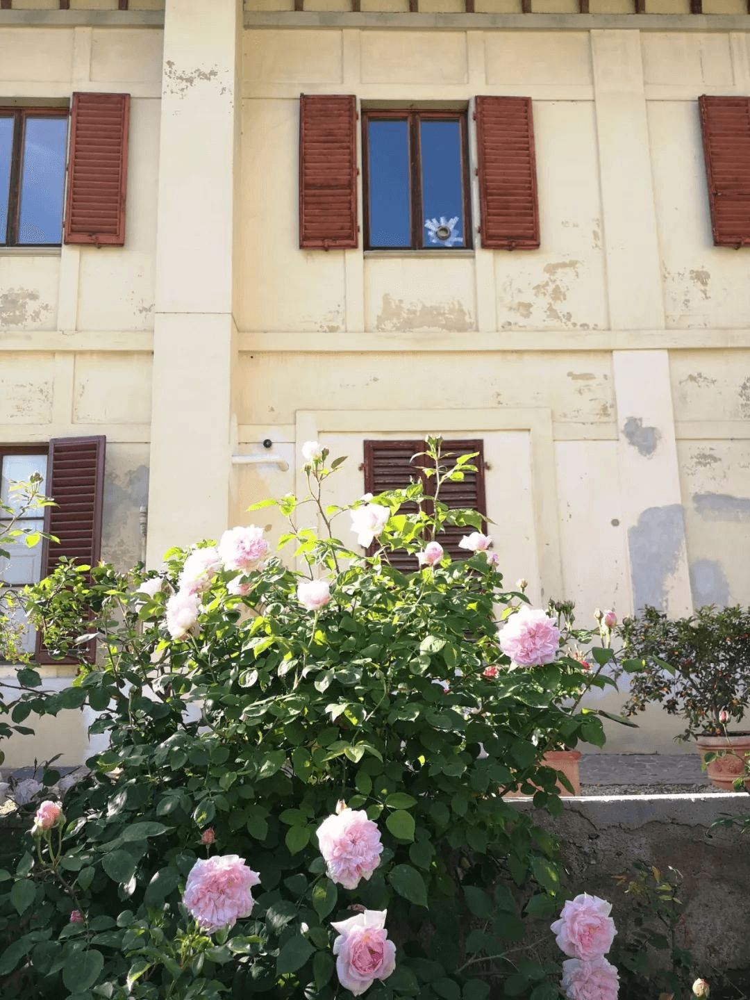2019.05.01
翡冷翠的淡雅
如果说，你曾问我最想去意大利的哪个地方，我的回答便是中部的丘陵地带，有山但山不高不陡峭，要是有葡萄园，那便甚好。
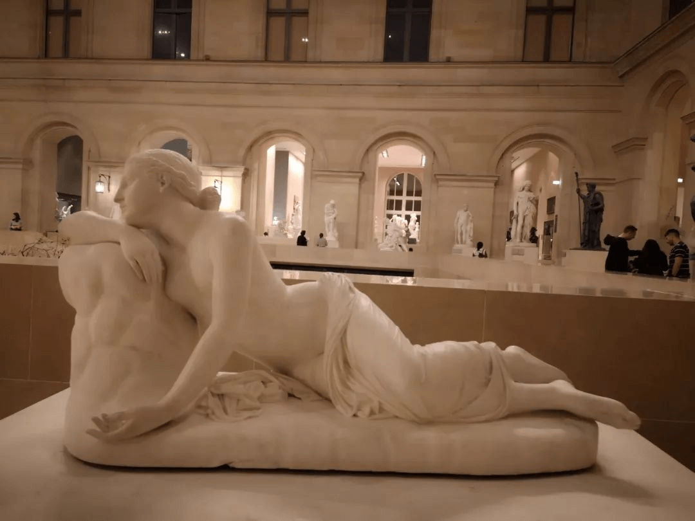2019.04.06
巴黎之旅（下）
传说中，在香榭丽舍大街亲吻三十秒的恋人，能够携手一生，至死不渝。因为穿梭如织的车流见证了他们无所畏惧的爱情。
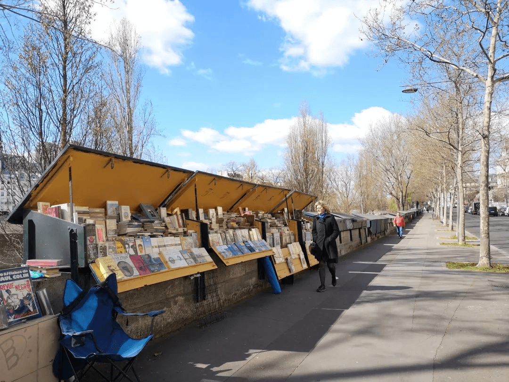2019.03.31
巴黎之旅（上）
婀娜妩媚的巴黎街道，会因为这些活泼可爱的城市点滴，而多一份稚气。时而像一位成熟的中年女性，成熟并极富经岁月洗礼的韵味；时而又像一位天真的孩子，无忧无虑的享受着当下。
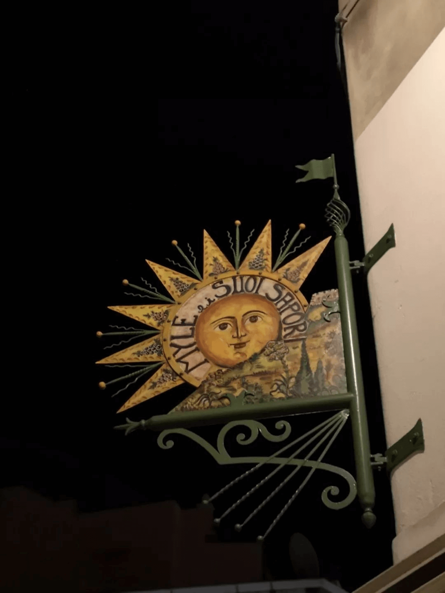2019.03.22
西西里的阴晴
好天气成了一种期盼，有便最好，无便将就
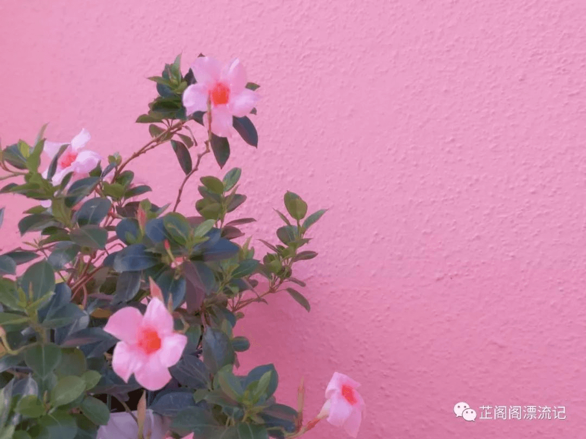2018.11.12
十一月的威尼斯
缺少蓝天白云的Venezia，看上去是陈旧凄冷的，一千多年前留下的建筑有了些许褪色与脱落，潮湿的气候使得它们这样是在所难免，但伴着阴雨天，灰蒙蒙的光线，这座城看上去令人叹息...

 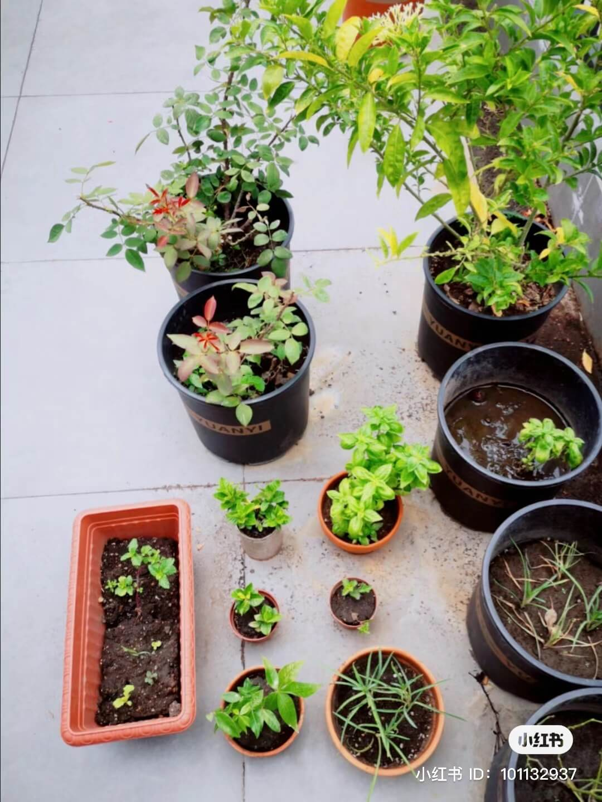
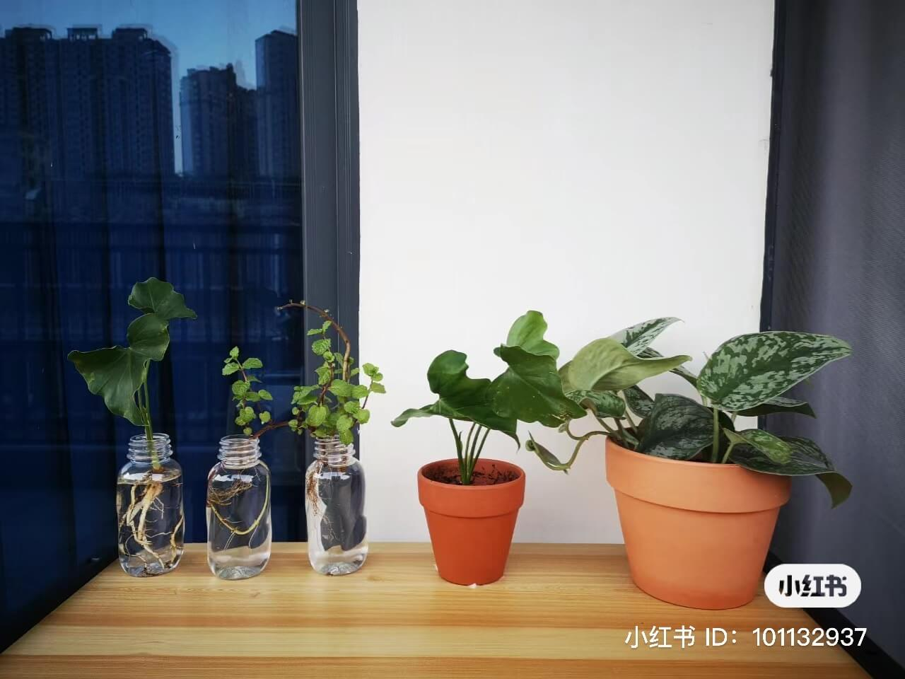
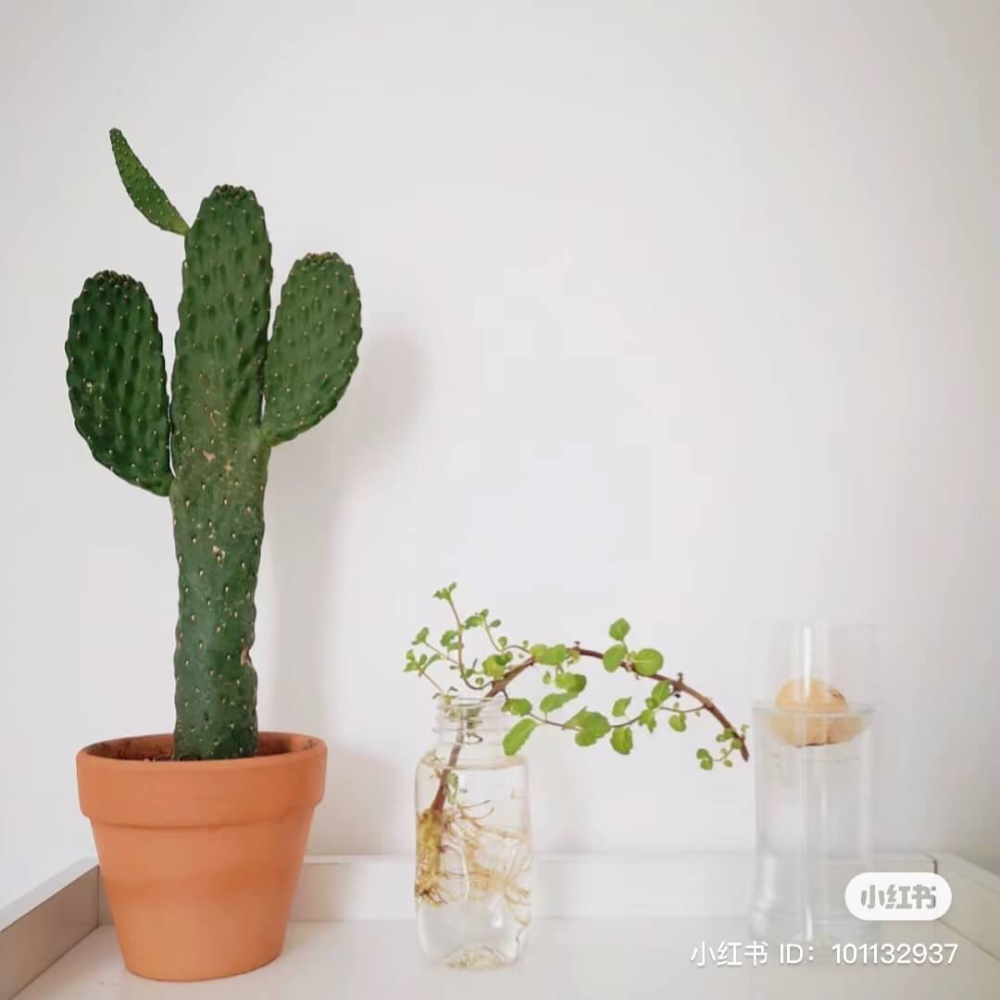
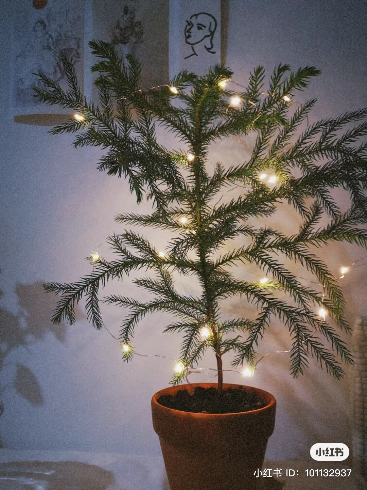
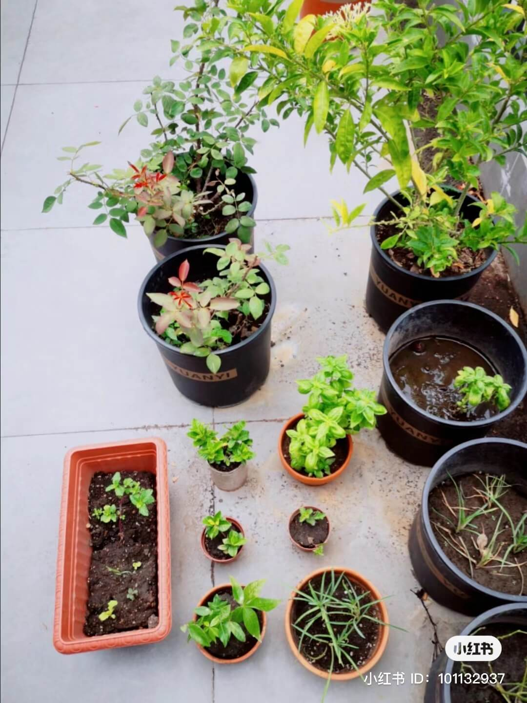
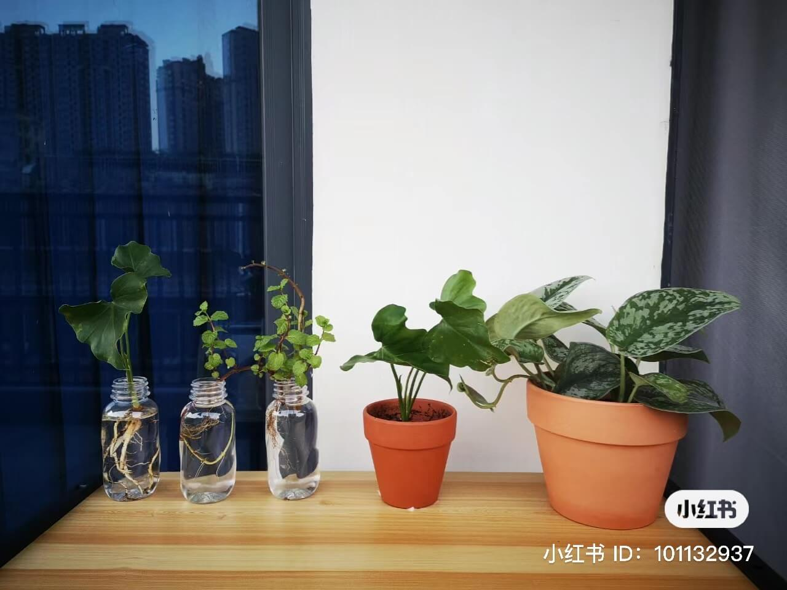
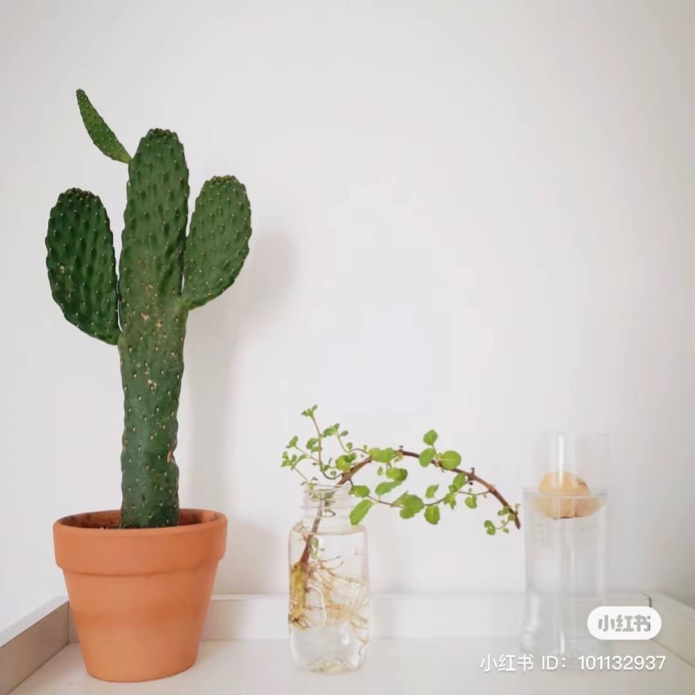
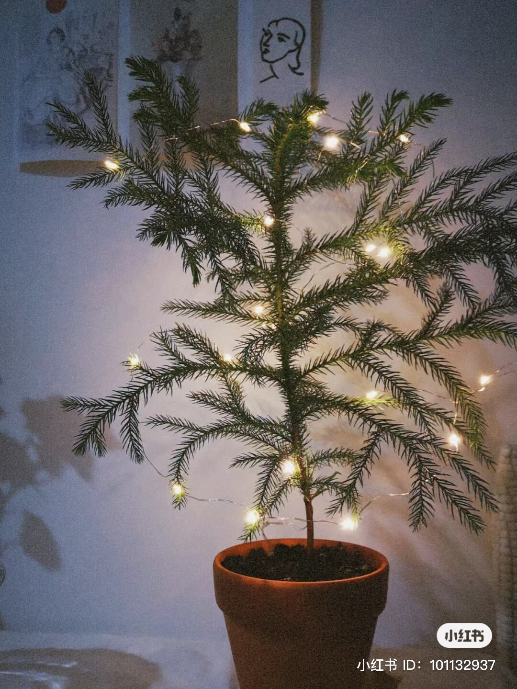